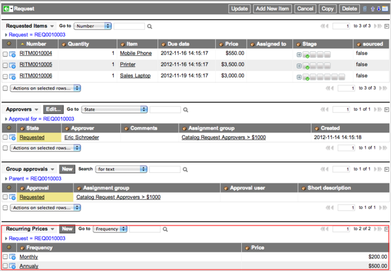
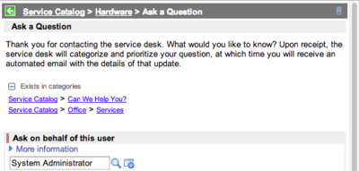
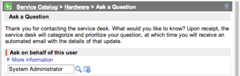
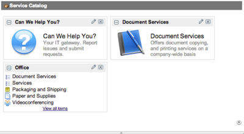
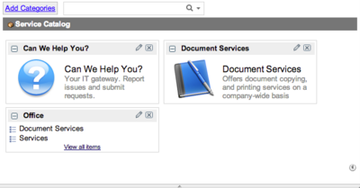

Defining Catalog Items
| |
Note: This article applies to Fuji. For more current information, see Service Catalog Items at http://docs.servicenow.com
The ServiceNow Wiki is no longer being updated. Please refer to http://docs.servicenow.com for the latest product documentation. |
Contents
1 Overview
Catalog items are goods or services that are available to order from a service catalog. Administrators and catalog administrators can define catalog items, with details such as formatted descriptions, photos, and prices.
2 Defining Catalog Items
To define a catalog item:
- Navigate to Service Catalog > Catalog Definition > Maintain Items.
- Click New.
- Enter the catalog item details (see table).
- Click Submit.
- [Optional] Assign the item to additional catalogs and categories.
- Define variables for the item, if applicable.
{kind=link}
| Field | Description |
|---|---|
| Name | Enter the item name to appear in the catalog. |
| Catalogs | Select the catalogs this item appears in, starting with the Eureka release. |
| Category | Select a category for the item. Starting with the Eureka release, categories can only be selected after the Catalogs field is populated. Catalog searches find only items that are assigned to a category. |
| Model | [Read-only] Click the reference icon ( |
| Workflow or Execution Plan | Select either a workflow or an execution plan (formerly named delivery plan) to define how the item request is fulfilled. If you select a workflow, the Execution Plan field is hidden. Clear the Workflow field to select an execution plan. |
| Price | Set a price for the item and select the currency from the choice list. |
| Recurring Price | Set a price that occurs repeatedly at a regular interval. For example, a printer maintenance service may have a $100.00 monthly recurring price. For details, see Setting Recurring Price. |
| Recurring Price Frequency | Select the time frame for recurrence, such as Monthly or Annually, only if the Recurring Price field has an entry. |
| Omit Price in Cart | Select this check box to hide the item price in the cart and the catalog listing. See Hiding Prices in the Service Catalog. |
| Active | Select this check box to make this item active (available to be ordered). |
| Icon | Upload a 16x16 pixel image to appear as an icon beside the item name in the catalog. If no image is uploaded, the default icon appears beside this item.
To use your own default icon, upload the image. The uploaded image overwrites the default image stored in images/service_catalog/generic_small.gif. |
| Preview Link | Click Preview Item to preview in a new window how the current item definition would look in the catalog. |
| Short Description | Enter text that appears on the service catalog homepage, search results, and the title bar of the order form. |
| Ordered Item Link | Specify the record defining a link to more information, as shown on the ordered item screen. See Adding Ordered Item Links for more details. |
| Description | A full description of the item. This description appears in the catalog when a user selects the item or clicks the associated More Information link. |
| Picture | [Optional] Upload an image of the item. |
| Availability | Defines which devices display the item: Desktop and Mobile, Desktop Only, or Mobile Only. Available starting with the Dublin release.
Note: Unsupported catalog item types are not displayed on mobile devices, even if Availability is set to show an item of this type. |
| Mobile picture type | Define the type of picture to display for the item on mobile devices. Set to Desktop to use the standard desktop picture, Mobile to use a specific image for the mobile device using the Mobile picture field, or None to not use a picture. Available starting with the Dublin release. |
| Mobile picture | Appears if Mobile picture type is set to Mobile. Select the image file to upload for the mobile picture. Available starting with the Dublin release. |
| Hide price (mobile listings) | Select this check box to hide the item price on mobile devices. Clear the check box to display the price. Available starting with the Dublin release. |
| Fields that can be added by configuring the form: | |
| Template | Select a template to populate the generated record with predefined values. Available for Record Producer items only. |
| No quantity | Select this check box to hide the quantity selector for the item. See Configuring Cart Layout for Specific Items. |
| No cart | Select this check box to hide the shopping cart for the item. See Configuring Cart Layout for Specific Items. |
| No search | Select this check box to prevent this item being listed in search results. |
| Order | Control the ordering of items in category lists. |
| Related Lists | |
| Variables | Define variables for the item to provide options for ordering the item. See Using Service Catalog Variables. |
| Variable Sets | Link an existing variable set to the item to provide multiple options for ordering the item. See Service Catalog Variable Sets. |
| Approved By Group | Add the groups that must approve requests for this item. See Approval Rules. |
| Approved By | Add the users who must approve requests for this item. See Approval Rules. |
| Categories | Add any additional categories associated with this item See Assigning Items to Additional Catalogs and Categories. |
| Catalogs | Add any additional catalogs associated with this item. See Assigning Items to Additional Catalogs and Categories. |
2.1 Applying User Criteria to Items
You can apply user criteria to an item, defining which users can and cannot access that item. You can apply user criteria to all types of catalog item, including order guides, content items, and record producers.
| |
Note: The user criteria restriction applies only within Service Catalog for the specific item it is applied for. However, the user criteria restriction is not applied outside the Service Catalog where the user has access to the item via the table. |
- In an item record, navigate to the Available For or Not Available For related lists.
- Click Edit to add an existing user criteria record, or click New to create a new one.
- Save the record to associate the user criteria record with the item.
| |
Note: The Not Available For settings override Available For settings. A user on the Not Available For list for an item cannot access that item, even if that user is also on the Available For list for that item. |
2.2 Assigning Items to Additional Catalogs and Categories
A catalog item may be available from more than one catalog and category. For example, a laptop carrying case may be available from both Laptops and Cases and Accessories categories.
Within an item:
- The Catalogs related list defines the catalogs the item is available in.
- The Categories related list defines the categories the item is available in.
To assign an item to an additional category or catalog, enter the new details in the appropriate related list.
| |
Note: The values in these lists override the values of the Catalogs and Category fields in the catalog item form. If you change values for either related list, these changes automatically update the values in those fields. |
2.3 Setting Recurring Prices
A catalog item can have a recurring price, as well as an initial price. For example, a laptop may have an initial price of $3,000, with an ongoing monthly service charge of $100. The recurring price feature is available starting with the Calgary release.
The price and the recurring frequency are set on the catalog item record. After the price and frequency are set, the recurring price appears in the catalog, catalog search results, catalog page for the item, shopping cart, and order summary screen.
{kind=link}
If multiple items with the same recurring price frequency are placed in the shopping cart, they are grouped together. The grouping makes it easier to see how much items cost for each frequency (for example, weekly, monthly, and annually). If the shopping cart contains items with and without recurring costs, they are grouped separately.
{kind=link}
On a request record, recurring prices are grouped by frequency and shown in the Recurring Prices related list. In the example below, two items each have a monthly recurring cost of $100.00 and their prices are grouped as a single record of $200.00 monthly. Another item with an annual recurring cost of $500.00 is listed as a separate record.

If a request record contains multiple items with the same recurring frequency, click the arrow next to the corresponding recurring price record to view details. In the example below, two items (the mobile phone and the sales laptop) each have a monthly recurring cost and are grouped together under the Monthly recurring price record, but are listed separately when the recurring price record is expanded. Only one item has an annual recurring cost.
{kind=link}
{kind=link}
2.4 Defining Item Quantities
By default, the service catalog offers quantity choices from 1 to 5, letting customers select item quantities within that range. This quantity selection applies automatically to all items, assuming these items do not have the quantity selector hidden.
To increase or reduce the quantities that a customer can select for catalog items:
- Navigate to System Definition > Choice Lists.
- Filter the list for records with Table set to sc_cart_item and the Element set to quantity. The existing quantity choices appear.
- To increase the quantities available for catalog items, add quantity choices. Model the additional choices after the existing ones.
-
- For example, to increase the quantity range from 1-6, add a 6 record.
-
- To reduce the quantities available for catalog items, delete the relevant quantity records. For example, to reduce the quantity range to 1-3, delete the records for 4 and 5.
{kind=link}
To restrict the roles allowed to change quantities, edit the List of roles (comma-separated) that can use the quantity selector in the shopping cart (glide.sc.allow.quantity) service catalog property. For example, you might limit this ability to the admin and catalog admin roles.
3 Adding Ordered Item Links
Catalog administrators can provide a link on the ordered item screen, linking to more information about an item. After users order the catalog item, they can click the link to see relevant information about the item they ordered, for example, for standard delivery terms and conditions.
The URL text and link can be defined once and reused across multiple items. Ordered item links are available starting with the Calgary release.
Links are rendered with an added parameter providing the sys_id of the requested item. For example, if the link is mylink.com, it is rendered as mylink.com?req_item=abcde12345. This can be useful for virtual provisioning situations.
To create an ordered item link:
- Navigate to Service Catalog > Catalog Definition > Ordered Item Links.
- Click New.
- Enter a Name for the ordered item link.
- Enter Link text to display as the link. For example, Click here to see more information about the iPhone.
- Enter the exact Link URL. For example, http://www.mylink.com.
- Select the Target. You can choose to open the link in a new window or tab, or within the catalog. If Within Catalog is chosen, the link must be within the same site. An HTTP site cannot be called from within HTTPS.
- Click Submit.
To add an ordered item link to an item:
- Navigate to Service Catalog > Catalog Definition > Maintain Items.
- Click an item Name.
- In the Ordered Item Link field, click the reference lookup icon (
 ).
). - Click an ordered item link Name.
- Click Update.
4 Copying Catalog Items
Use the Copy button in the Catalog Item form to create a new copy of a catalog item, named Copy of [item name].
Copying an item creates a full duplicate of the item, including the item details, attachments, variables, client scripts, and approvals. This may be more useful than using the Insert function, which only copies the item details.
If you copy an active catalog item, the copy is also active. Consider deactivating the copy by clearing the Active check box until your changes are complete.
5 Editing Catalog Items from the Service Catalog
To edit a catalog item from the service catalog listing, right-click the header and select one of the following options:
- Configure Item: edit the item definition.
- Configure Variables: add or remove variables from an item.
- New Variable: create a new variable for the item.
- Configure Catalog Client Scripts: edit the catalog client scripts for the item.
- Configure Catalog UI Policies: edit the catalog UI policies for the item.
The word personalize is used instead of configure in versions prior to the Fuji release. For example, Personalize Item and Personalize Variables.
6 Configuring Cart Layout for Specific Items
You can set fields in the Catalog Item form to configure the cart layout for specific items. This overrides any general cart layout settings. For example, you can hide an item's price by setting the Omit price in cart field to true for that item.
To specify item-specific behavior for a cart:
- Navigate to Service Catalog > Catalog Definition > Maintain Items.
- Select the catalog item.
- Configure the form to add both Use cart layout and any of the following item configuration fields you require:
- Omit price in cart
- No cart
- No order
- No order now
- No proceed checkout
- No quantity
- Clear the Use cart layout check box to display the configuration fields for that item.
- Set the item configuration field values as required.
- Click Update.
{kind=link}
7 Configuring Catalog Items Using Properties
You can use service catalog properties to configure the overall behavior and usage of service catalog items.
Navigate to Service Catalog > Catalog Policy > Properties to access service catalog properties.
7.1 Restricting Behavior by Item Type
By default, all order guides, record producers, and wizard launchers have these restrictions:
- They cannot be added to a requested item.
- They do not provide a Try It action.
- They are not added to the cart as items.
To remove these restrictions, or apply these restrictions to other types of items, modify the comma-separated lists of tables in the following properties:
- List of class names for catalog items that cannot be added to an existing request (glide.sc.item.cannot_add_to_request): restricts the items that can be added to a requested item, after an end user places a request. For example, to restrict content items from being added to an existing request, add sc_cat_item_content to the list for this property.
- List of class names for catalog items that do not use the default "Try It" UI Action (glide.sc.item.cannot_try_it): restricts the items which allow you to click Try It on the item form to preview how it appears in the service catalog. Items with such restrictions do not display Try It on the form.
- List of class names for catalog items that do not generate a normal cart item (glide.sc.item.not_normal_cart_item): restricts which item types are added to the cart by default.
7.2 Hiding 'Exists in categories' Displays
By default, catalog items that are in several categories show Exists in categories information that shows any other categories the items are available in.
To hide this information, set the Show the additional categories section when viewing a catalog item (glide.sc.show_additional.cats) property to No.
| Showing additional categories: | Hiding additional categories: |
|  |  |
{kind=link}
{kind=link}
7.3 Setting Number of Items and Categories to Preview
By default, up to five items or categories appear in each category on the homepage.
To change this number, set the Number of Catalog Items/Categories to preview in a section (glide.sc.max_items) property to the required value.
| Previewing five items: | Previewing two items: |
|  |  |
{kind=link}
{kind=link}